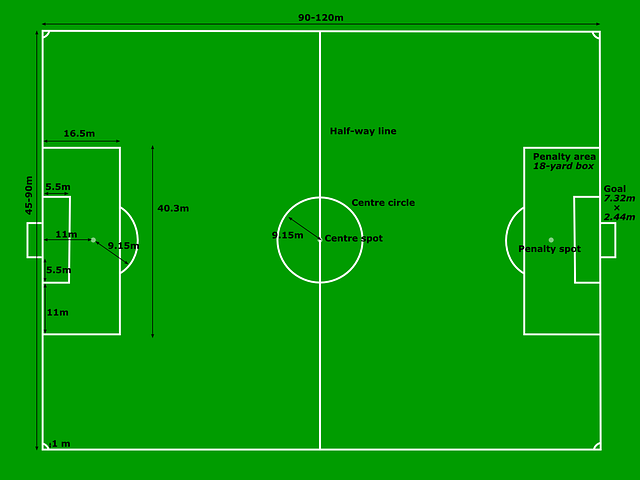

| Home | Rules | Soccer Players | Soccer Leagues |
|---|
1. Before the game, a coin toss determines which team gets to choose between picking which goal they'll defend and kicking off to start the game. To kick off, one of the forward players kicks the ball off the center line, usually to a teammate.
2. After a goal, the team scored upon kicks off. After halftime, teams change ends and the kickoff is taken by the team that did not kick off at the start of the game.
There are a some items you need in order to play. You need soccer cleats to prevent slipping. Soccer cleats should have molded cleats or ribbed soles. Also, shin guards to prevent shinbone injury. Players must wear the same colored jersey or shirts. All youth programs require shin guards to be worn by all players.
In soccer, the referee may let play continue and not call a foul if he or she thinks that stopping play would give an advantage to the team committing the foul. This is called the “advantage clause”.
The duration of the game will depend on the age of the children. Older children will more than likely have two halves. Your league will determine whether quarters or halves are played and how long each will be.
A goal can only be scored if the entire ball goes completely over the outside edge of the goal line, under the cross bar and between the goal posts while it is in play. Any player may score goals, including the goalie.
An offensive player must have two opponents including the goalkeeper between himself and the goal line at the moment the ball is passed to him. Offside is determined when the ball is passed to the player, not when the player receives the ball.
These fouls must be committed intentionally and may result in a Red Card”. The fouls are as follows:
• Kicking a player.
• Jumping up at a player.
• Charging a player in a rough way.
• Charging a player from behind.
• Tripping a player.
• Hitting or spitting at a player.
• Pushing a player.
• Holding a player.
• Handling the ball. (Except by a goalkeeper). This foul is called if the player is
trying to control the ball with his hands or arms.
There are many positions in soccer. Here are all of them
1– Goalkeeper
2– Right Fullback
3– Left Fullback
4– Center Back
5– Center Back (or Sweeper, if used)
6– Defending/Holding Midfielder
7– Right Midfielder/Winger
8– Central/Box-to-Box Midfielder
9– Striker
10– Attacking Midfielder/Playmaker
11– Left Midfielder/Wingers